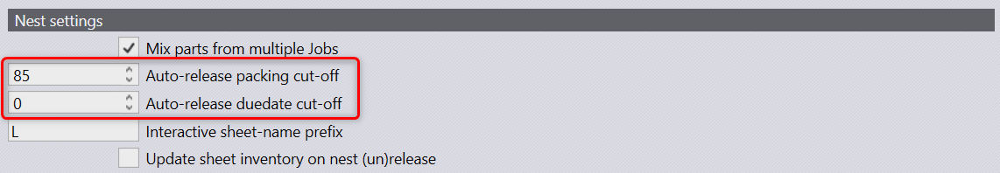

These nest settings can be used to control the auto-nest behavior in Praxis.

Auto-release packing cut-off: This value is used to decide whether a nested layout is held in approval queue and is renested again when new parts are planned or they are released for production and related outputs are exported to the output folder.
Auto-release due date cut-off: This is not used by auto-nester right now.